30个领域30本不容错过的入门书
| sn | 领域 | 名称 | 作者 |
| 1 | 教育学 | 《爱弥儿》 | 卢梭 |
| 2 | 两性婚姻 | 《爱的五种语言》 | 盖瑞•查普曼 |
| 3 | 人际交往 | 《沟通的艺术》 | 罗纳德•阿德勒、拉塞尔•普罗克特 |
| 4 | 心理 | 《社会心理学》 | 戴维•迈尔斯 |
| 5 | 健身 | 《瑜伽之光》 | B.K.S.艾扬格 |
| 6 | 经济学 | 《牛奶可乐经济学》 | 罗伯特•弗兰克 |
| 7 | 投资理财 | 《聪明的投资者》 | 本杰明•格雷厄姆 |
| 8 | 科普 | 《从一到无穷大》 | G.伽莫夫 |
| 9 | 科学 | 《万物简史》 | 比尔•布莱森 |
| 10 | 人类学 | 《金枝》 | 弗雷泽 |
| 11 | 哲学 | 《大问题》 | 罗伯特•所罗门 |
| 12 | 宗教 | 《佛陀传》 | 一行禅师 |
| 13 | 社会学 | 《乡土中国》 | 费孝通 |
| 14 | 中国史 | 《中国通史》 | 吕思勉 |
| 15 | 世界史 | 《全球通史：从史前史到21世纪》 | L.S.斯塔夫里阿诺斯 |
| 16 | 互联网 | 《浪潮之巅》 | 吴军 |
| 17 | 营销咨询 | 《超级符号就是超级创意》 | 华杉/华楠 |
| 18 | 管理 | 《卓有成效的管理者》 | 彼得•德鲁克 |
| 19 | 设计 | 《写给大家看的设计书》 | 威廉姆斯 |
| 20 | 广告 | 《一个广告人的自白》 | 奥格威 |
| 21 | 物理 | 《果壳中的宇宙》 | 史蒂芬•霍金 |
| 22 | 文学 | 《大众天文学》 | C弗拉马里翁 |
| 23 | 生物 | 《细胞生命的礼赞》 | 刘易斯•托玛斯 |
| 24 | 地理学 | 《地理学与生活》 | 阿瑟•格蒂斯等 |
| 25 | 建筑 | 《现代建筑：一部批判的历史》 | 肯尼斯•弗兰姆普敦 |
| 26 | 逻辑学 | 《简单的逻辑学》 | 麦克伦尼 |
| 27 | 艺术 | 《艺术的故事》 | 贡布里希 |
| 28 | 法学 | 《法律之门》 | 博西格诺 |
| 29 | 语言学 | 《语言本能》 | 史迪芬•平克 |
| 30 | 军事 | 《第三帝国的兴亡》 | 威廉•夏伊勒 |
001 教育学——————《爱弥儿》
内容简介：一本寓意深刻的成长小说，一部生动有趣的教育论著。卢梭根据儿童的年龄提出了对不同年龄阶段的儿童进行教育的原则、内容和方法。它告诉我们，遵从孩子的天性，让他们自由成长更有助天才的培养。
推荐理由：自然主义教育思想之源头，教育书籍的经典著作。
http://book.douban.com/subject/5917677/
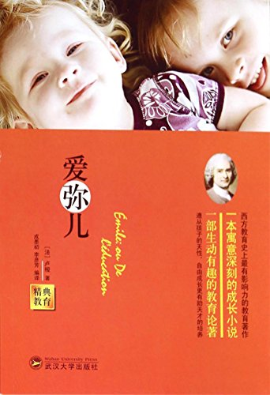作者: 让•雅克•卢梭
副标题: 论教育
原作名: Émile,ou De l'éducation
002 两性婚姻——————《爱的五种语言》
内容简介：如果爱情是一则神话，那么这本书可以使美梦成真；如果爱情是一颗蜜糖，那么这本书将教你如何防潮防腐，让爱情进入婚姻永不褪色，永葆如新。
推荐理由：每个人都有爱与被爱的需要，不同的人有不同的语言来表达和接收爱，夫妻之间许多误解、隔阂和争吵都是由于不了解或忽略对方的主要爱语造成的，懂得了对方爱的语言，让家庭更和谐。
http://book.douban.com/subject/5386360/
作者: 查普曼
副标题: 创造完美的两性沟通
盖瑞·查普曼博士（Dr.Gary Chapman）是《纽约时报》百万畅销书作者，享誉全球的婚恋辅导专家，具有丰富的辅导经验和专业的技巧指导，他的讲座和书籍改变了无数人的家庭生活。
他的代表作《爱的五种语言》曾长时间高居《纽约时报》畅销书排行榜榜首，全球热销400多万册。此外，他还著有《道歉的五种语言》、《愤怒，爱的另一面》、《婚姻的四季》、《爱语暖心田》等书籍。这些作品被翻译成数十种语言，畅销全球。
目前，查普曼博士担任美国婚姻与家庭机构总裁。他主持的广播节目《成长的婚姻》在100多家电台播出。
爱的五种语言 (盖瑞.查普曼) 一.肯定的言语 二.精心时刻 三.礼物 四. 服务的行动 五.身体的接触。
003 人际交往——《沟通的艺术》
内容简介：你是否说话过于直白不讲情面？你是否说话过于委婉达不到目标？你又是否因为不善沟通倍感挫折？本书从三个层面教你养成既有效又适当的沟通方式。
推荐理由：从认识自我开始，对“沟通”这件事做了深入的探讨，不是说话就是沟通这么简单，日常生活工作中常出现的沟通不畅问题，都可在这本书里找到原因。
http://book.douban.com/subject/26275861/

作者: [美]罗纳德·B·阿德勒 / 拉塞尔·F·普罗科特
副标题: 看入人里，看出人外
原作名: Looking Out Looking In,14e
你是否说话过于直白不讲情面？
你是否说话过于委婉达不到目标？
你又是否因为不善沟通备感挫折？
从三个层面教你养成既有效又适当的沟通方式
•看入人里之沟通者
•看出人外之沟通信息
•看人之间之关系演变
本书分为“看入人里”、“看出人外”和“看人之间”三个部分：“看入人里”主要探讨了与沟通者有关的因素，说明了人际关系的本质，强调自我在沟通中的角色，并分析了知觉与情绪在沟通中的重要性；“看出人外”聚焦于沟通者之外信息的传送与接收，分析了语言的运用和非语言线索的特征，强调了倾听的重要性；“看人之间”则主要讨论了关系的演变过程，侧重于亲密关系的区辨，提出了增进沟通氛围、处理人际冲突的各种沟通方法。本书既关注有关人际沟通的理论介绍，也加入了丰富实用的阅读材料。7大专栏、超过100篇文章，让你可以轻松学习和应用书中的沟通技巧。新增超过50部热门美剧、电影和真人秀的分析，让你可以轻松印证作者在每一章总结的沟通准则，增加阅读的趣味性。
罗纳德•B•阿德勒（Ronald B. Adler），致力于有关沟通的研究和写作。他的著作主题涵盖了商务沟通、公共演讲、小组交流、独断力以及社交技巧。写作之外，他还在大学授课，以帮助专业和商务人士改进他们在职场中的人际沟通技巧。
拉塞尔•F•普罗科特（Russell F. Proctor），北肯塔基大学教授。1990年在一次沟通学会议上与阿德勒相遇，两人就使用故事片作为教学用具达成了共识。多年来，他们围绕沟通这个主题广泛地撰写文章、四处演讲，并合作出版了许多教材。
004 心理——————《社会心理学》
内容简介：《社会心理学》将基础研究与实践应用相结合，以逻辑性的组织结构引领学生了解人们是如何思索、影响他人并与他人建立联系的。该书深入浅出，配合实验说明与插图，通俗易懂。是人们了解自身、了解社会、了解自己与社会之间关系的最佳的指导性书籍。
推荐理由：戴维·迈尔斯的《社会心理学》已经成为领域中的一个典范，是美国心理学教科书市场上评价同类教材的一个标尺，因此我很高兴向国内的同行推荐这本书。我相信我们的读者拿到这本书后，也会和我一样捧读再三，不忍释卷。——彭凯平 美国加州大学伯克利分校心理学教授
http://book.douban.com/subject/1476651/

作者: [美] 戴维·迈尔斯
《社会心理学》这本书被美国700多所大学或学院的心理系所采用，是这一领域的主导教材，已经成为评价其他教材的标准。
这本书将基础研究与实践应用完美地结合在一起，以富有逻辑性的组织结构引领学生了解人们是如何思索、影响他人并与他人建立联系的。是人们了解自身、了解社会、了解自己与社会之间关系的最佳的指导性书籍。
戴维·迈尔斯自从获得爱荷华大学的博±学位之后，就在密歇根的霍普学院工作，成为那里的John Dirk Werkman心理学教授，并且开设了多门社会心理学的课程。霍普学院的学生邀请他在毕业典礼上发言并评选他为“最杰出的教授”。
005 健身——————《瑜伽之光》
内容简介：艾扬格大师在书中首次向全球全面介绍瑜伽的练习方法，细致讲解了瑜伽呼吸控制法和清洁法，特别讲述体式的要点及益处，并亲身完美示范了200个瑜伽体式的完整技巧。
推荐理由：本书被评价为“西方人通往东方古老健康艺术的捷径”。《瑜伽之光》是每个练习瑜伽者必备的指导。
http://book.douban.com/subject/3572716/
作者: [印] B. K. S. 艾扬格(B. K. S. Iyenger)
副标题: 现代瑜伽圣经
原作名: Light on Yoga
本书分为什么是瑜伽、瑜伽体式收束法清洁法、呼吸控制三部分。具体内容包括：瑜伽体式；提示与注意事项；呼吸控制的技巧和功效等。
006 经济学——————《牛奶可乐经济学》
内容简介：通俗经济学开山鼻祖，经济学入门书，书中没有艰涩的数学公式，只有有趣的生活事例。
推荐理由：如果一开始就讲经济学原理，你一定会感到枯燥，但从这些你每天都见到，但从未问过为什么的现象入手，你一定会兴趣盎然，而且读完后会有醍醐灌顶之感，你会成为经济学的“粉丝”。——著名经济学家梁小民
http://book.douban.com/subject/3000997/
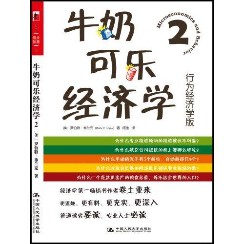作者: [美] 罗伯特·弗兰克
副标题: 最妙趣横生的经济学课堂
一部“博物经济学”著作，它非学术大部头，而只是生活小智慧。其实经济学正生动地编织着生活的方方面面，人身边的大事小事都可以用经济学原理来一一破解，这就是博物经济学。
作者罗伯特·弗兰克教授是美国康奈尔大学管理学院的教授。他喜欢在自己的课堂上给学生布置“博物经济学作业”，让学生写小短文，提生活中的问题，并以经济学的视角做出回答。经过几年的积累，这些问题被收集成册，就成了此书的蓝本。在接受《商业周刊》采访时，弗兰克教授被问及，为什么对“博物经济学”情有独钟时，他回答道，“你只需掌握五六个基本的经济学概念，生活中的所有相关问题都会迎刃而解。就如同生物进化论，只要你理解了它，什么物种、组织、结构，都会变得简单起来。这也会使你对这门学科产生更浓厚的兴趣。”
在谈到这些博物经济学问题的答案时，弗兰克教授的观点显然不同于传统经济学课堂的要求。“请不要急于去书中找寻答案。这些生活中的问题不是公式和概念，它们并没有标准确切的答案，每个人都有可能给出更多更合理的解释。虽说，不是每一个人都是经济学家，但至少，我们可以更积极地去思考，并把思考用于生活。这样，我们每一个人，都可以成为一名博物经济学家。”
罗伯特·弗兰克，博物经济学家，康奈尔大学约翰逊管理学院经济学和管理学教授，《纽约时报》经济专栏特约评论员。弗兰克不是一位学术型经济学家。他主张经济学应该是一门根植于经验和观察的社会科学，而不是以数学为核心的硬科学。
007 投资理财——————《聪明的投资者》
内容简介：本书主要面向个人投资者，旨在对普通人在投资策略的选择和执行方面提供相应的指导。
推荐理由：格雷厄姆的思想，从现在起直到100年后，将会永远成为理性投资的基石。——沃伦•巴菲特
http://book.douban.com/subject/5243775/
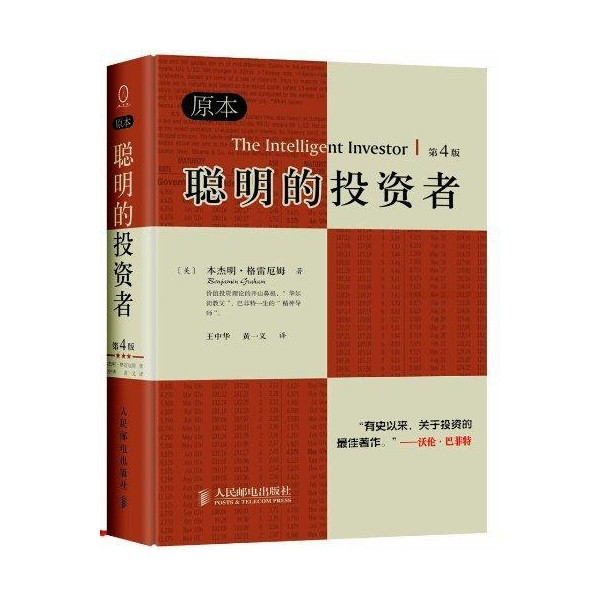作者: 本杰明·格雷厄姆 / Benjamin Graham
原作名: The intelligent investor
本杰明•格雷厄姆（Benjamin Graham，1894～1976年）美国经济学家和投资思想家，投资大师， “现代证券分析之父”， 价值投资理论奠基人。格雷厄姆生于伦敦，成长于纽约，毕业于哥伦比亚大学。著有《证券分析》(1934年)和《聪明的投资者》(1949年)，这两本书被公认为“划时代的、里程碑式的投资圣经”，至今仍极为畅销。格雷厄姆不仅是沃伦•巴菲特就读哥伦比亚大学经济学院的研究生导师，而且被巴菲特膜拜为其一生的“精神导师”，“血管里流淌的血液80%来自于格雷厄姆”。格雷厄姆在投资界的地位，相当于物理学界的爱因斯坦，生物学界的达尔文。作为一代宗师，他的证券分析学说和思想在投资领域产生了极为巨大的震动，影响了几乎三代重要的投资者。如今活跃在华尔街的数十位上亿的投资管理人都自称为格雷厄姆的信徒，因此，享有“华尔街教父”的美誉。 贾森•兹威格（Jason Zweig）《华尔街日报》投资与个人理财高级专栏作家。早先，他曾是《货币》杂志和《时代周刊》的资深专栏记者，《福布斯》共同基金专栏主编。从1987年他开始撰写投资方面的文章，是华尔街有影响力的资深财经传媒记者。
008 科普——————《从一到无穷大》
内容简介：书中以生动的语言介绍了20世纪以来科学中的一些重大进展。先漫谈一些基本的数学知识，然后用一些有趣的比喻，阐述了爱因斯坦的相对论和四维时空结构，并讨论了人类在认识微观世界（如基本粒子、基因）和宏观世界（如太阳系、星系等）方面的成就。
推荐理由：十分浅显易懂、深入浅出的科普书，对入门者有一个很好的引领，涵盖范围很广，数论相对论微观粒子宏观宇宙都有涉及。
http://book.douban.com/subject/1102715/
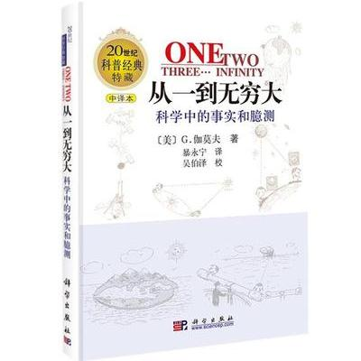作者: [美] G. 伽莫夫
副标题: 科学中的事实和臆测
原作名: One Two Three... Infinity
《从一到无穷大：科学中的事实和臆测》是当今世界最有影响的科普经典名著之一，1970年代末由科学出版社引进出版后，曾在国内引起很大反响，直接影响了众多的科普工作者。
作品以生动的语言介绍了20世纪以来科学中的一些重大进展。先漫谈一些基本的数学知识，然后用一些有趣的比喻，阐述了爱因斯坦的相对论和四维时空结构，并讨论了人类在认识微观世界（如基本粒子、基因）和宏观世界（如太阳系、星系等）方面的成就。
乔治·伽莫夫（1904-1968, George Gamow）世界著名物理学家和天文学家。伽莫夫1904年生于俄国敖德萨市。1928年获苏联列宁格勒大学物理学博士学位。先后在丹麦哥本哈根大学和英国剑桥大学（师从物理学家玻尔和卢瑟福），以及列宁格勒大学、巴黎居里研究所、密执安大学、华盛顿大学、加利福尼亚大学伯克利分校、科罗拉多大学从事研究和教学工作。1968年在美国科罗拉多州的博尔德逝世。
伽莫夫兴趣广泛，曾在核物理研究中取得出色成绩，并与勒梅特一起最早提出了天体物理学的“大爆炸”理论，还首先提出了生物学的“遗传密码”理论。他也是一位杰出的科普作家，正式出版25部著作，其中18部是科普作品。
009 科学——————《万物简史》
内容简介：作者用清晰明了、幽默风趣的笔法，将宇宙大爆炸到人类文明发展进程中所发生的繁多妙趣横生的故事一一收入笔下。惊奇和感叹组成了本书，历历在目的天下万物组成了本书，益于人们了解大千世界的无穷奥妙，掌握万事万物的发展脉络。
推荐理由：一次富于智慧、风趣幽默而又大开眼界的科学之旅。── 甘子钊 中科院院士
http://book.douban.com/subject/1225983/
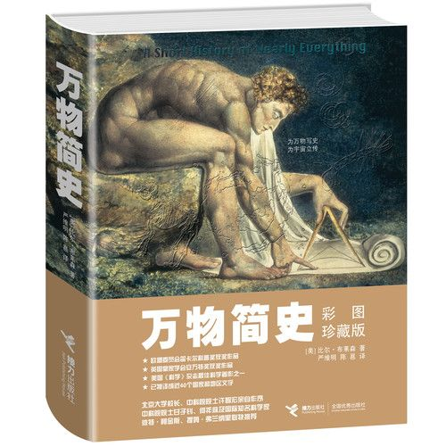作者: [美] 比尔·布莱森
原作名: A Short History of Nearly Everything
这是一部有关现代科学发展史的既通俗易懂又引人入胜的书，作者用清晰明了、幽默风趣的笔法，将宇宙大爆炸到人类文明发展进程中所发生的繁多妙趣横生的故事一一收入笔下。惊奇和感叹组成了本书，历历在目的天下万物组成了本书，益于人们了解大千世界的无穷奥妙，掌握万事万物的发展脉络。
书中回溯了科学史上那些伟大与奇妙的时刻，引用了近年来发现的最新科学史料，几乎每一个被作者描述的事件都奇特而且惊人：宇宙起源于一个要用显微镜才能看得见的奇点；全球气候变暖可能会使北美洲和欧洲北部地区变得更加寒冷；1815年印度尼西亚松巴哇岛坦博士拉火山喷发，喷涌而出的熔岩以及相伴而来的海啸夺走了10万人的生命；美国黄石国家公园是“世界上最大的活火山”……而那些沉迷于科学的科学家们也是千奇百怪：达尔文居然为蚯蚓弹起了钢琴；牛顿将一根大针眼缝针插进眼窝，为的只是看看会有什么事情发生；富兰克林不顾生命危险在大雷雨里放风筝；卡文迪许在自己身上做电击强度实验，竟然到了失去知觉的地步……
这本书在讲述科学的奇迹与成就的同时，还浸润着浓郁的悲天悯人的人文关怀。全书从科学发展史的角度对“我们从哪里来？我们是谁？我们到哪里去？”这一千古命题作了极为精当的阐释，每一个人在阅读此书之后，都会对生命、对人生、对我们所生活的世界产生全新的感悟。一位美国小读者的父亲说，读过《万物简史》之后，他对死亡不再感到恐惧……作者认为，这是一本书所能获得的最高评价。
比尔·布莱森，享誉世界的旅游文学作家。1951年出生于美国艾奥瓦州，毕业于美国德雷克大学。从1973年起，曾在英国居住20年之久，任职于《泰晤士报》与《独立报》，同时也为《纽约时报》、《国家地理杂志》等刊物撰文。后搬回美国，现与妻子和四个小孩居住于新罕布什尔州的汉诺威市。
布莱森擅长用不同的眼光来看待他所游历的世界，在他的书里，英国式的睿智幽默与美国式的搞笑绝妙地融合在了一起。他的尖刻加上他的博学，让他的文字充满了幽默、机敏和智慧，使他自己成为“目前活在世上的最有趣的旅游文学作家”（《泰晤士报》）。
代表作有《哈！小不列颠》、《欧洲在发酵》、《一脚踩进小美国》、《别跟山过不去》、《请问这里是美国吗？》等多种，每本均高居美、英、加畅销书排行榜前列。其中《哈！小不列颠》更被英国读者推选为“最能深刻传达出英国灵魂的作品”。
作者不但才华横溢，兴趣亦十分广泛，在语言学方面著有《麻烦词汇词典》、《母语》、《美式英语》等书，皆为拥有广大拥趸的幽默之作。
010 人类学——————《金枝》
内容简介：本书着重研究原始人的宗教、巫术、仪式、心理与它们的教源，以及它们在人类思想方式发展进程中的重要作用。弗氏在这部作品中阐述的基本观点是：“人类较高级的思想活动，大体是巫术发展到宗教，更进而到科学的这几个阶段。
推荐理由：《金枝》文笔清丽，义理明畅，对世界各地习俗娓娓道来，如数家珍，加上众多耐人寻味的观点和评论穿行其间，全书处处闪烁着智慧的光芒，而绝少呆滞和陈腐的气息，读来兴味盎然，令人不忍释卷。
http://book.douban.com/subject/5348946/
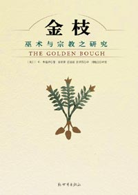作者: [英] 詹姆斯·乔治·弗雷泽 (James George Frazer)
原作名: Golden Bough
本书是一部严肃的研究原始信仰和巫术活动的科学著作，是一部在世界范围内研究古老习俗极其有关信仰、观念的科学巨著，是闻名遐迩的学术必读著作，由于该书搜集了丰富的人类学资料，被称为人类学的百科全书。“金枝”是从古罗马作家所叙述的神话传说中转引而来的。本书由一早已不复存在的古老习俗而引起的，作者对此进行了全面深入的分析、研究和诠释。
011 哲学——————《大问题》
内容简介：这是一本哲学的入门读物，它最大的优点是叙述生动，很吸引人，特别是能够吸引那些非专业人士的注意力。作者不是按照一般哲学导论著作那样按照事件发生的顺序罗列哲学史上的一些说法，而是完全把读者当成一点都不了解哲学，按照一些大问题来组织材料的。也就是说，随着讨论的不断深入，自然而然地把读者引入哲学的殿堂。
推荐理由：引导人们喜爱哲学、走进哲学，进而思考哲学、探索哲学，这是哲学家的重要责任。罗伯特•所罗门教授的《大问题》正是这样一部让人以“大视野”阅读哲学的哲学著作。——中国著名哲学教授孙正聿
http://book.douban.com/subject/25961458/

作者: [美] 罗伯特·所罗门
副标题: 简明哲学导论
原作名: The Big Questions: A Short Introduction to Philosophy
本书的目的就是引导读者进入真正思考的大门。罗伯特•所罗门教授尤以擅长授课和写作清晰晓畅著称，他不像一般哲学导论著作那样按照事件发生的顺序罗列哲学史上的一些观点，而是完全把读者当成一点都不了解哲学，从而按照一些大问题来组织材料，叙述生动，字里行间都透露出为普通读者的考虑。随着讨论的不断深入，读者会自然而然地进入哲学的殿堂，在不知不觉中熟悉哲学史上一些最重要的观点，而且很可能会对许多问题重新进行审视，真正享受思考的乐趣。
哲学就是对智慧的爱。它是对价值重要性的坚持，是对完全陷入生活琐事而仅仅随波逐流的拒斥。我们渴望洞察，企盼理解，但我们的生活被常规攫住了，不时会被那些所谓的“消遣”或“娱乐”活动分神。我们失去的是思考的快乐、理解的挑战、灵感，以及哲学的慰藉。我们都是借着思想而生活的，所以问题的关键不在于是否从事哲学，而在于是接受一种廉价的、没有挑战的替代品，还是试图进行真正的思考。
罗伯特•所罗门（1942—2007），世界著名哲学家和哲学教师，尤精于尼采、存在主义哲学和情感理论的研究，特别擅长用日常生活中的例子来解释大哲学家复杂的思想，同时又不失其严格性。他生前是美国得克萨斯大学奥斯汀分校的“Quincy Lee百年纪念” 讲席教授和杰出授课教授。他在密歇根大学获得博士学位，曾在普林斯顿大学、匹兹堡大学和加州大学执教。他出版过四十多本著作。
012 宗教——————《佛陀传》
内容简介：一行禅师沉稳迷人地讲述了佛陀释迦牟尼从出生、成长、出家、修行、得道、弘法，直至灭寂的完整一生。
推荐理由：无论你有没有佛学根基，阅读本书，都是一次充满喜乐和感动，受益匪浅的修行。
http://book.douban.com/subject/25819842/
作者: 一行禅师
副标题: 全世界影响力最大的佛陀传记
原作名: Old Path White Clouds
自从1991年在美国第一次出版以来，二十多年的时间，本书已成为全世界佛学爱好者的必读书和入门书。
一行禅师沉稳迷人地讲述了佛 陀释迦牟尼从出生、成长、出家、修行、得道、弘法，直至灭寂的完整一生。
世人似乎是从本书中第一次发现，佛陀从来不是神，而是一个人。他没有任何神通，和我们一样会困惑和痛苦，他也有家人，有妻子和儿子，只是他离开了他们，独自走上了修行成佛，拯救众生的道路。
书中的佛陀不仅伟大、慈悲，而且真实可爱；你看到的正是2500年前的佛陀本人，看到他和大家一起坐在地上吃饭，他吃饭的威仪令人着迷，他吃完饭，和别人一样自己收拾好餐具，放好，一举一动间，散发着佛法的灵性光芒。
娓娓道来的佛陀生平故事，融汇着佛法的精深奥妙；无论你有没有佛学根基，阅读本书，都是一次充满喜乐和感动，受益匪浅的修行。
本书原名《故道白云》，为了使更多读者能够了解这部伟大的著作，我们在再版时使用了更加简单和直白的名字：《佛陀传》。
一行禅师
当今世上最有影响力的禅宗僧人，被誉为当世第一大德。
1926年生于越南，16岁出家。
1960年代，得到普林斯顿大学支持，赴美国学习，先后在康奈尔大学和哥伦比亚大学讲授佛法。一生传播贴近普通人的“生活佛法”，传递正念生活之道，同时宣扬非暴力的和平理念。
1967年，一行禅师被黑人民权领袖马丁·路德·金提名为诺贝尔和平奖候选人。
1973年，越南政府取消他的护照，拒绝让他回到越南，一行禅师流亡到法国。
1982年，一行禅师在法国南部建立“梅村”禅修道场，近30年来，在欧洲和北美也建立了许多“正念静修中心”，为佛教界人士、普通人和许多孩子提供了大量的帮助，其著作也已被翻译成四十多个国家的文字，使佛教在西方世界产生越来越大的影响。
一行禅师还是一位著名的诗人和作家，本书是他最受推崇的代表作。
013 社会学——————《乡土中国》
内容简介：《乡土中国》是学界共认的中国乡土社会传统文化和社会结构理论研究的代表作。
推荐理由：本书提供了一个社会学的视角，通俗易懂，清晰明了。是了解中国社会的极佳读物。
http://book.douban.com/subject/3283983/
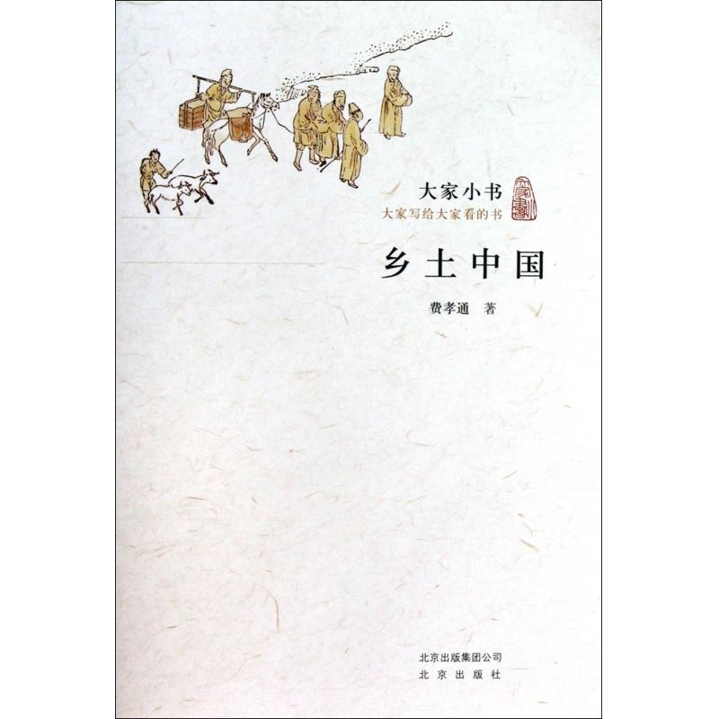作者: 费孝通
著名社会学家费孝通教授，一生行行重行行，实地调查和考察总结中国农村经济发展的各种模式，写下了诸多不朽篇章。《乡土中国》的写作经过，在后记里已经交代清楚。这里收集的是我在40年代后期，根据作者在西南联大和云南大学所讲“乡村社会学”一课的内容，应当时《世纪评论》之约，而写成分期连载的14篇文章。
费孝通（1910-2005），字彝江。祖籍江苏吴江。1936年赴英留学，1938年获伦敦大学哲学博士学位，同年回国。先后任云南大学、西南联合大学、清华大学教授，清华大学社会学系主任、副教务长。1949年后历任中央民族学院教授、副院长，中央人民政府民族事务委员会副主任，中国社会科学院民族研究所副所长、社会学研究所所长，北京大学社会学系教授，曾任全国人大副委员长、全国政协副主席、民盟中央主席等职。曾获美国马林诺夫斯基纪念奖、英国皇家人类学会的赫青黎奖章、美国大英百科全书奖、日本福冈市亚洲文化大奖、菲律宾“麦格赛”社会领袖奖等桨项。主要著作有《江村经拼朱《民族与社会》、《生育制卿》、《行行重行行》等。
著名社会学家费孝通教授，一生行行重行行，实地调查和考察总结中国农村经济发展的各种模式，写下了诸多不朽篇章。本书推出的是学界共认的中国乡土社会传统文化和社会结构理论研究的代表作《乡土中国》、《生育制度》、《乡土重建》和《皇权与神权》四篇著作，可供社会学工作或教学、研究者参考。
学术的道路是清贫的，学术的道路同样也是艰辛的，但是真正的学者从来都是安于清贫，在艰辛的学术道路上披荆斩棘，传承人类宝贵的知识财富。费孝通先生用他的一生见证了一代学人的风范，为中国社会学的发展开辟了广阔的天地，使社会学这门外来的学科真正在中国生根、发芽、成长、壮大……本书收录的都是费老学术上的成功之作，更是使后学者领略了社会学的魅力所在，进而使社会学在中国真正做到了面向大众，为学术推广铺平道路！
014 中国史——————《中国通史》
内容简介：全书按照中国社会经济发展和社会组织的变化分为五个不同的时期，即：上古史(秦以前)、中古史(秦汉至唐朝全盛)、近古史(唐朝安史之乱至宋元)、近世史(明朝至清朝)、现代史(辛亥革命以后)。这种按照社会进化的观点划分历史阶段的做法明显区别于以往的史书，对当下的人和以后的史学界都产生了深远的影响。
推荐理由：论方面广阔，述作宏富，且能深入为文者，我常推重吕思勉诚之先生、陈垣援庵先生、陈寅恪先生与钱穆宾四先生为前辈史学四大家。——严耕望 历史学家
http://book.douban.com/subject/3707886/
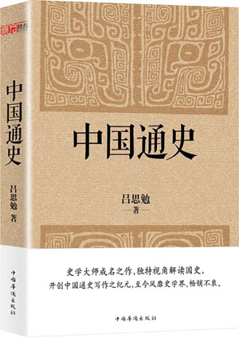作者: 吕思勉
本书是吕思勉先生史学论著之一，完成于1939年，分上、下两册。上册分门别类地叙述社会经济制度、政治制度和文化学术的发展情况，内容包括婚姻、族制、政体、阶级、财产、官制、选举、赋税、兵制、刑法、实业、货币、衣食、住行、教育、语文、学术、宗教等十八类；下册按历史顺序叙述了政治历史的变革。本书此次列入《吕思勉文集》出版，以上海开明书店的初版为底本，吸收了杨宽、吕翼仁先生的校订成果，将原书的繁体直排夹注，改为繁体横排夹注，同时尽量保留了著作的原貌。
015 世界史——————《全球通史》
内容简介：主要讲述了世界历史的进化，世界文明的发展及其对现代社会的影响。作者着眼于全球，侧重于那些有影响的、促进历史发展的历史事件，其中包括原始社会、欧亚大陆的古代文明、欧亚大陆的原始文明、欧亚以外的世界、地区分割后的世界、西方世界的崛起、西方人统治的世界、西方的衰落与成功等八个主要的部分。
推荐理由：《全球通史》给了我强烈的现实感：它可以用来救治我们现在所面临的由于陶醉于技术进步而产生的深重的精神危机的一种思想武器；它有助于人们理解未来——包含各种可能性和选择的未来。——阿诺德•汤因比
http://book.douban.com/subject/10583099/
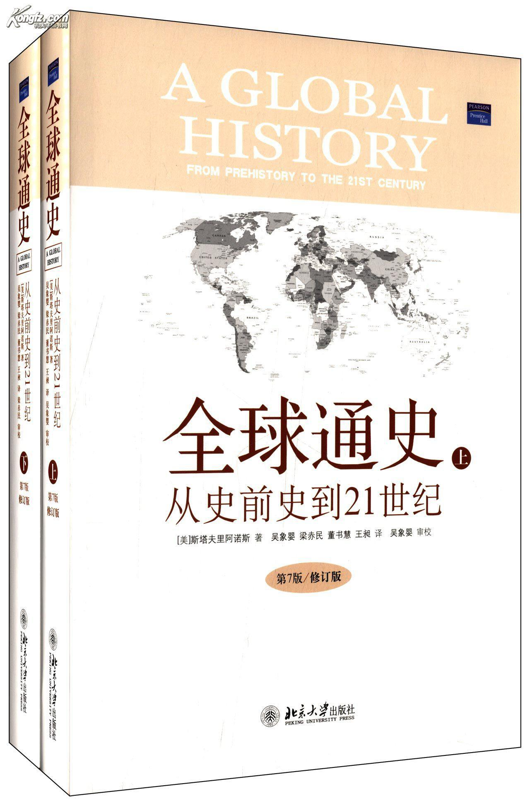作者: (美) 斯塔夫里阿诺斯
副标题: From Prehistory to the 21st Century
原作名: A Global History: From Prehistory to the 21st Century
《全球通史》由斯塔夫里阿诺斯著，吴象婴、梁赤民、董书慧、王昶译，作者在本书中采用全新的史学观点和方法，将整个世界看作一个不可分割的有机的统一体，从全球的角度而不是从某一国家或某一地区的角度来考察世界各地区人类文明的产生和发展，把研究重点放在对人类历史进程有重大影响的诸历史运动、诸历史事件和它们之间的相互关联和相互影响上，努力反映局部与整体的对抗以及它们之间的相互作用。本书一经问世，受到著名历史学家汤因比和巴勒棵拉夫高度评价，立即被译成多种文字，流传甚广，影响很大。
《全球通史》上起人类的起源，下迄21世纪初多极世界相待时期，上下数十万年，一气呵成。除了政治、经济外，还涉及军事、文化、教育、宗教、科学技术、人口、移民、种族关系、道德风尚、思想意识等各个方面。读来颇觉新颖爽朗，有强烈的现实感。从文字内容来看，作者对庞杂的史料取舍恰当，对各种历史事件着笔简要，边叙边议，文字生动；从编写技巧来看，每章前冠以简明提要，承上启下，便于掌握线索，每章末附有选读书目，便于进一步研究。
L.S.斯塔夫里阿诺斯是美国加州大学的历史学教授，享誉世界的历史学家，曾获得过古根海姆奖、福特杰出教师奖秒各克菲勒基金奖等一系列学术荣誉。虽然他以《全球通史》享誉世界，但实际上他著述颇丰，除《全球通史》外，斯塔夫里阿诺斯的作品还包括《1453年以来的巴尔干各国》、《奥斯曼帝国：它是欧洲的病人吗？》、《全球分裂：第三世界的历史进程》和《源自我们过去的生命线：新世界史》等。
斯塔夫里阿诺斯教授于 2004年3月23日在美国加州荷亚去世。
016 互联网——————《浪潮之巅》
内容简介：本书不只是一本历史书，除了讲述科技顶尖企业的发展规律，对于华尔街如何左右科技公司，以及金融风暴对科技产业的冲击，也多有着墨。
推荐理由：很棒的了解IT领域的入门读物，全面且逻辑清晰。以IT界的科技变革为基础，到产业组织以及与资本的博弈，深刻而全面。——资深书虫熊小茸
http://book.douban.com/subject/6709783/
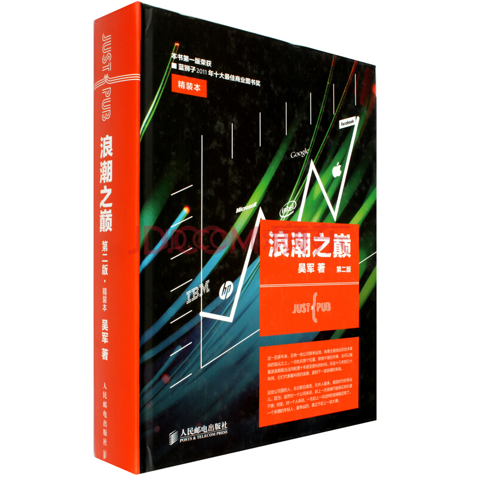作者: 吴军
近一百多年来，总有一些公司很幸运地、有意识或无意识地站在技术革命的浪尖之上。在这十几年间，它们代表着科技的浪潮，直到下一波浪潮的来临。
从一百年前算起，AT&T 公司、IBM 公司、苹果公司、英特尔公司、微软公司、思科公司、雅虎公司和Google公司都先后被幸运地推到了浪尖。虽然，它们来自不同的领域，中间有些已经衰落或正在衰落，但是它们都极度辉煌过。本书系统地介绍了这些公司成功的本质原因及科技工业一百多年的发展。
在极度商业化的今天，科技的进步和商机是分不开的。因此，本书也系统地介绍了影响到科技浪潮的风险投资公司，诸如 KPCB 和红杉资本，以及百年来为科技捧场的投资银行，例如高盛公司，等等。
在这些公司兴衰的背后，有着它必然的规律。本书不仅讲述科技工业的历史，更重在揭示它的规律性。
吴军博士，毕业于清华大学计算机系（本科）、电子工程系（硕士）和美国约翰·霍普金斯大学计算机科学系（博士）。在清华大学和约翰·霍普金斯大学期间，吴军博士致力于语音识别、自然语言处理，特别是统计语言模型的研究。他曾获得1995年全国人机语音智能接口会议的最佳论文奖和2000年Eurospeech的最佳论文奖。
吴军博士于2002年加入Google公司。在Google，他和Amit Singhal（Google院士，世界著名搜索专家）、Matt Cutts（Google反作弊官方发言人）等三位同事一起开创了网络搜索反作弊的研究领域，并因此获得Google工程奖。2003年，他和Google全球架构的总工程师朱会灿博士等共同成立了中日韩文搜索部门。吴军博士是当前Google中日韩文搜索算法的主要设计者。在Google其间，他还领导了许多研发项目，包括许多与中文相关的产品和自然语言处理的项目，并得到了当时公司首席执行官埃里克·施密特和创始人谢尔盖·布林的高度评价。此外，他还在谷歌黑板报上发表了《数学之美》系列博客。
吴军博士在国内外发表过数十篇论文，并获得和申请了十余项美国和国际专利。他于2005年起，当选为约翰·霍普金斯大学计算机系董事会董事。2007起担任风险投资基金中国世纪基金的董事。
2010年，吴军博士离开Google,加盟腾讯公司，担任负责搜索业务的副总裁。并担任国家重大专项“新一代搜索引擎和浏览器”项目的总负责人。
017 营销咨询——————《超级符号就是超级创意》
内容简介：本书是“华与华方法”首次结集出版，全文由华杉先生亲自撰写。从产品开发、产品命名、产品包装，到品牌传播、品牌战略、企业战略，“华与华方法”深入到企业营销的各个层面；从日化、药品、食品、文具，到房地产、工业园区、出版、互联网，“华与华方法”进入了当今商业竞争的各个领域。华与华和不同行业的巨头一起，创造了一个接一个经典案例；在成为中国最成功的营销咨询机构的同时，也给“华与华方法”蒙上一层传奇和神秘的色彩。翻开本书，了解第一套从中国本土生长出来的传奇营销方法。
推荐理由：这本书远不止符号和创意，它其实是超越了广告营销的一部商业时代的哲学之书。
http://book.douban.com/subject/25779152/
副标题: 席卷中国市场10年的华与华战略营销创意方法
“华与华方法”的只言片语在营销界流传已广，“超级符号”“品牌寄生”等词汇也被越来越多的营销人知道、理解和应用，但作为本土营销界第一套成体系的营销思想，十余年来，“华与华方法”一直是以残篇断章的形式，被爱好者、研究者通过打印机、复印机、转发帖或者U盘传播。
本书是“华与华方法”首次结集出版，全文由华杉先生亲自撰写。
从产品开发、产品命名、产品包装，到品牌传播、品牌战略、企业战略，“华与华方法”深入到企业营销的各个层面；从日化、药品、食品、文具，到房地产、工业园区、出版、互联网，“华与华方法”进入了当今商业竞争的各个领域。华与华和不同行业的巨头一起，创造了一个接一个经典案例；在成为中国最成功的营销咨询机构的同时，也给“华与华方法”蒙上一层传奇和神秘的色彩。
翻开本书，了解第一套从中国本土生长出来的传奇营销方法。
华杉：上海华与华营销咨询有限公司董事长，中国最成功的创意人，“华与华方法”创立者，多年来致力于企业战略和品牌营销的研究与实践，独创了熔企业战略、产品开发、营销创意、品牌管理为一炉的“华与华方法”，深入影响了中国商业竞争的各个领域。
华楠：上海读客图书有限公司董事长，著名广告人，2009年中国年度出版人，《致我们终将逝去的青春》《老男孩》等电影联合出品人。
018 管理——————《卓有成效的管理者》
内容简介：该书论述了一个管理者如何做到卓有成效。这本书是德鲁克最著名的管理学著作之一。
推荐理由：一本优秀的著作就是一座挖不尽的宝藏，可以陪伴人的终生。这样的著作一旦诞生就已经独立于作者、独立于时代，属于每个读者自己。这样的书是永恒的、跨越时空的。 ——赵曙明 南京大学商学院院长、教授、博士生导师
http://book.douban.com/subject/4020857/

作者: [美] 彼得·德鲁克
原作名: Effective executive
卓有成效是管理者必须做到的事，但是在所有的知识组织中，每一位知识工作者其实都是管理者——即使他没有所谓的职权，只要他能为组织做出突出的贡献。管理者的成效往往是决定组织工作成效的最关键因素；并不是只有高级管理人员才是管理者，所有负责行动和决策而又有助于提高机构工作效能的人，都应该像管理者一样工作和思考。
彼得·德鲁克：1909年生于维也纳，1937年移居美国，终身以教书、著书和咨询为业，是当代国际上最著名的管理学家，被称为“大师中的大师”。
在美国他曾担任由美国银行和保险公司组成的财团的经济学者，美国通用汽车公司、克莱斯勒公司、IBM公司等大企业的管理顾问。为纪念其在管理领域的杰出贡献，克莱蒙特大学的管理研究生院以他的名字命名——彼得·德鲁克管理研究生院。
他著述颇丰，包括《管理的实践》、《卓有成效的管理者》、《管理：使命、责任、实务》、《旁观者》等几十部著作，已传播到全世界130多个国家。其中《管理的实践》一书奠定了他作为管理学科开创者的地位，而《卓有成效的管理者》已成为全球管理者必读的经典。
200 2年6月，美国总统布什宣布彼得·德鲁克成为当年“总统自由勋章”的获得者，这是美国公民所能获得的最高荣誉。
019 设计——————《写给大家看的设计书》
内容简介：这本书出自一位世界级设计师之手。复杂的设计原理在书中凝炼为亲密性、对齐、重复和对比4个基本原则。作者以其简洁明快的风格，将优秀设计所必须遵循的这4个基本原则及其背后的原理通俗易懂地展现在读者面前。
推荐理由：作者把一些经验性的理念总结成了精辟的4条原则，不仅适合设计零基础的人，也对不同类型的平面设计有基本的指导作用。
http://book.douban.com/subject/25879430/
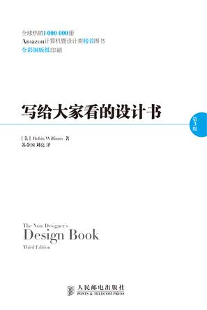原作名: The Non-Designer’s Design Book, Third Edition
在这个创意无处不在的时代，越来越多的人成为设计师。简历、论文、PPT、个人主页、博客、活动海报、给客人的邮件、名片……，处处都在考验你的设计能力。
美术功课不好？没有艺术细胞？毫无设计经验？
没关系！在设计大师Robin Williams看来，设计其实很简单。在这部畅销全球多年、影响了一代设计师的经典著作中，Robin Williams将优秀设计的秘诀归纳为对比、重复、对齐和亲密性四条基本原则，并用简洁通俗、幽默生动的文笔，同时配以大量经过修改进行前后对比的实例图解和设计练习（并提供解答），直观清晰地传授给读者。通过本书，普通读者很快就能够自信地设计出专业级别的作品，而专业设计师也将从中获得灵感和解决问题的途径。
Robin Williams
世界著名设计师、技术专家和畅销书作家。通过写书和授课，她已经影响了整整一代数字设计师。同时，作为Adobe和Mac技术社区内的偶像级专家，她拥有大批拥戴者。她是Publish Magazine、Adobe Magazine等杂志的专栏作家，是MacWorld Expo等业界重要活动和组织的顾问委员会成员，还创办了Santa Fe电影艺术学院。除本书外，她还著有几十部畅销图书和获奖著作，包括The Non-Designer’s Web Book、Robin Williams Design Workshop、The Little Mac Book等，有的书已经被翻译为十几种文字，产生了世界性的影响。
020 广告——————《一个广告人的自白》
内容简介：在这本书中，奥格威坦诚地介绍他本人在奥美广告公司的宝贵经验，包括怎样经营广告公司、怎样争取客户、怎样维系客户，怎样当一个好客户，怎样撰写有效的文案、怎样制作上乘的电视广告等等。
推荐理由：引人入胜，学识渊博的著作，是对每一位商界人士和投资者都极具价值的广告必读书。——《福布斯》
http://book.douban.com/subject/26663738/
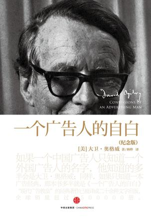作者: [美]大卫·奥格威
广告界经典作品，可能是广告史上对广告人影响最大的一本书。如果一个广告人只知道一个人，那个人应该是奥格威，只知道一本书，那这本书应该是《一个广告人的自白》。
大卫•奥格威，David Ogilvy 1911-1999，出身英国的大卫奥格威，是现代广告业的大师级传奇人物他于创立了奥美广告公司开启了现代广告业的新纪元。他确立了奥美这个品牌，启蒙了对消费者研究的运用，同时创造出种崭新的广告又化。
奥格威早年做过厨师、炊具推销员，后移居美国在乔治盖洛普博士的受众研究所担任助理调查指导。二战期间先后在英国安全协调处（British Seourity Coordination）和英国驻美大使馆任职。后在宾夕法尼亚州做农夫。
1948年,奥格威在纽约以6000美元创办了奥美广告公司，随后以创作许多富有创意的广告而赢得盛誉。他的作品机智而迷人，但最重要的是他坚持它们必须有助于销售。他把广告业的经营和专业化推向顶峰他的价值观造就出个全球性的传播网络，他睿智隽永的风格不但塑造了奥美厂告，问时更深深影响着整个广告业的发展。
021 物理——————《果壳中的宇宙》
内容简介：在本书中霍金把读者带到理论物理的最前沿，真理在那里甚至比幻想更令人眼花缭乱。他利用通俗的语言解释制约着宇宙的原理。
推荐理由：本书十分适用于对宇宙物理感兴趣的人，它鲜明而刺激、轻松而严谨，激起我们强烈的求知欲望，在霍金精神魅力的带领下，领略宇宙的组成与创生。
http://book.douban.com/subject/1034279/
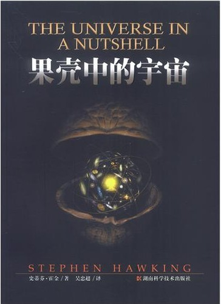作者: [英] 史蒂芬·霍金
在《果壳中的宇宙》这部新作中，霍金把读者带到理论物理的最前沿，真理在那里甚至比幻想更令人眼花缭乱。他利用通俗的语言解释制约着宇宙的原理。
022 天文学——————《大众天文学》
内容简介：作者以文学的笔墨、精美的图片，将奇妙的宇宙世界揭示在渴求新知的读者面前。全书共分七篇，分别介绍了地球，月亮，太阳，行星世界，彗星、流星及陨星，恒星宇宙以及天文仪器等。
推荐理由：用令人着迷的语言，叙说宇宙的神奇与壮美；以晓畅优雅的文字，构筑科学通俗化的丰碑。——卞毓麟中国科学院国家天文台客座教授
http://book.douban.com/subject/1013707/
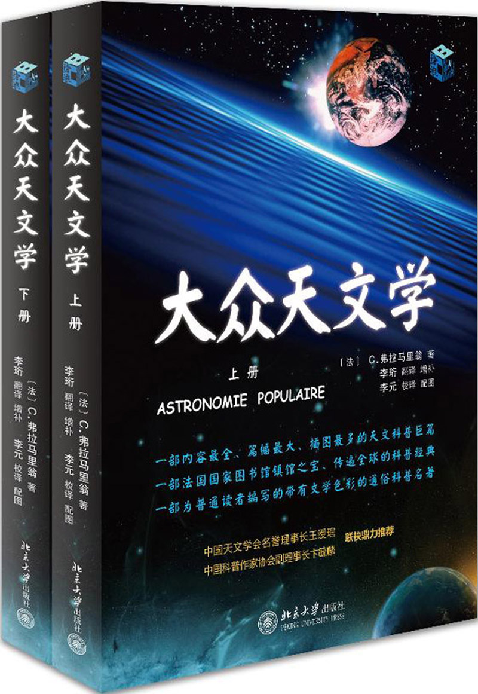作者: C.弗拉马里翁
原作名: Astronomie populaire
世界名著译丛。 本书是由法国天文学家、世界著名科普作家C.弗拉马里翁所著，初版于1880年，遂成为传遍全球的科普经典，被誉为“法国图书馆镇馆之宝”。 作者以文学的笔墨、精美的图片，将奇妙的宇宙世界揭示在渴求新知的读者面前。全书共分七篇，分别介绍了地球，月亮，太阳，行星世界，彗星、流星及陨星，恒星宇宙以及天文仪器等。值得一提的是，译者李珩教授又根据天文学的新近发展进行了补充修订。
弗拉马里翁(Flammarion，Nicolas-Camille，1842-1925）是法国天文学家和优秀的科普作家。他出生于农民家庭，从小自学科学知识，在巴黎天文台当实习员期间，业余补习天文学。1962后他出版天文学专著《可居世界的众多》，从此名声日增。自1866年开始，在巴黎作天文讲演座无虚席。他的演讲大受欢迎，布鲁塞尔、日内瓦、罗马等地争相聘请。1880年出版《大众天文学》，这是他最成功的作品，直到他逝世那一年共再版20多次。法国科学院为之颁发奖金，有些有名的天文学家就是因为读了这部书而爱上天文学的。弗拉马里翁的主要研究工作是在双星和聚星、恒星的颜色和运动、火星和月球的地形等方面，1878年出版了一份双星表、火星图和月面图。1882年，他在巴黎附近的瑞维西镇上建立一座私人天文台，在此工作四十多年。发表观测和研究报告100多篇。1882年创办《天文学》杂志，1887年组织法国天文学会，任第一任会长。
023 生物——————《细胞生命的礼赞》
内容简介：《细胞生命的礼赞》是作者结集的第一本书，包含一个医学家、生物学家关于生命、人生、社会乃至整个地球的思考。思想博大而深邃，信息庞杂而新奇，批评文明，嘲弄愚见。
推荐理由：从生物科学的角度谈生活、谈社会、谈宇宙。夯实了一幢关于人类在地球演化的广阔时空中所处位置的思考大厦。
http://book.douban.com/subject/7059612/
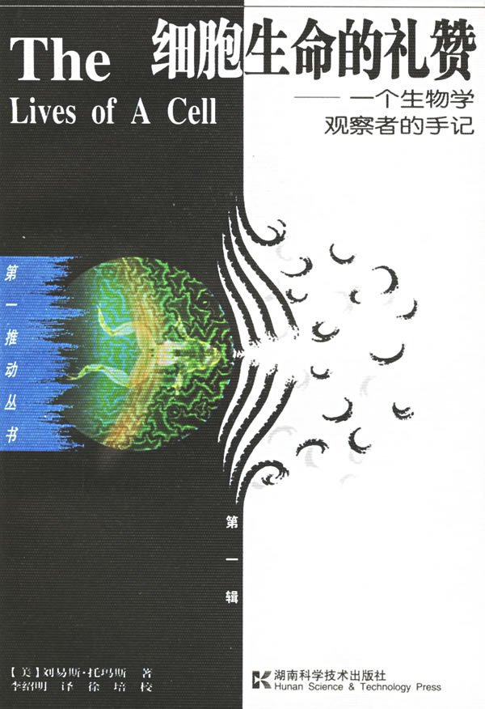作者: 刘易斯·托马斯
副标题: 刘易斯·托马斯作品集
原作名: The Lives of a Cell-Notes of a Biology watcher by Lewis Thomas
20世纪70年代初，《新英格兰医学杂志》发生一件值得纪念的事。它断断续续刊载了一系列文章，总题目颇谦逊，叫做“一个生物学观察者的手记”。后来，这些文章结集成两本书，面向大众，一本叫做《细胞生命的礼赞》，一本叫做《水母与蜗牛》。两书面世后，有数百万读者观念为之一变，人生因之增色。
《细胞生命的礼赞——一个生物学观察者的手记(汉英对照)》是作者结集的第一本书，包含一个医学家、生物学家关于生命、人生、社会乃至整个地球的思考。思想博大而深邃，信息庞杂而新奇，批评文明，嘲弄愚见．开阔眼界、激发思索。1974年出版后，立即引起美国读书界和评论界的巨大反响，获当年美国国家图书奖，此后易手数家出版社，印行二十多版次。许多篇目进入美国大学的英文读本、社会学课本和其他多种文集。刘易斯·托马斯的名字也因这一本小书而家喻户晓，有口皆碑。有评论家甚至把他比做当代知识武装下的蒙田。
刘易斯·托马斯，医学博士。毕业于哈佛医学院。一生担任过儿科学、内科学、病理学和生物学等多个教授职位，曾任纽约大学医学院院长和耶鲁大学医学院院长。最后的职位是斯隆一凯特林癌症纪念医院院长和荣誉院长。
024 地理学——————《地理学与生活》
内容简介：相对于其他地理学书籍，本书特别突出了地理学与生活的相关性。对人体有害的天气现象、城市土地利用模式、城市形态的变化、城市垃圾与危险废物的处理等与我们生活密切相关的问题均有涉及。
推荐理由：地理大百科，趣味性极高。知识点全面系统又贴近人的实际生活。
http://book.douban.com/subject/24736494/
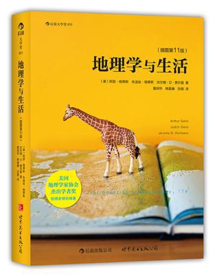作者: [美]阿瑟·格蒂斯(Arthur Getis) / 朱迪丝·格蒂斯(Judith Getis) / 杰尔姆·D·费尔曼(Jerome D.Fellmann)
原作名: Introduction to Geography,11e
◎城市污染物为何久聚不散？
◎环境中的微小毒素会被食物链逐级放大？
◎地理条件造就了哪些独特饮食文化？
※完善自我，掌握新的洞察力，地理学视角看世界
※知灾防灾：了解地震、暴雨如何形成，才能做好应对的准备
※新闻时事：发掘热点话题的地理特点，综合分析时政问题
※历史变迁：以地理学知识审视环境与气候变化对历史影响
※大千世界：从冰川遗迹、大峡谷的壮丽景观到城堡、教堂的人文风情，掌握自然与人文地理，学会深度旅行
◎首部整合各分支学科的地理学译著 知识点全面系统又贴近人的实际生活
◎独特专栏紧密追踪公共政策 将地理学与现实话题紧密结合
◎生活中应知晓的地理学常识
◎再版10次的当代地理学传承、发展与应用的经典之作
地理学是一个古老的研究课题，最初仅指地球的绘图与勘查，但到今天已经逐渐发展为一门范围广泛的学科。本书共13章，分为四个篇章，囊括自然地理学、人口地理学 、文化地理学、城市地理学等学科分支。以介绍地理学的发展、核心概念，以及长期以来在地理学思想与著作中形成的四种系统性传统为开端，四大传统独立成篇，每篇集中论述这些地理学观点的一个方面。前三篇专门介绍地理学的分支学科，而区域分析传统单独成为最后一章，利用前三种传统和主题，并通过相互参照对其进行综合。
相对于其他地理学书籍，本书特别突出了地理学与生活的相关性。对人体有害的天气现象、城市土地利用模式、城市形态的变化、城市垃圾与危险废物的处理等与我们生活密切相关的问题均有涉及。平实、生动的文字与丰富的实例，使本书极具可读性，读者通过本书亦会获得一种新的思维方式。
阿瑟·格蒂斯（Arthur Getis）在宾夕法尼亚州立大学获学士和硕士学位，华盛顿大学获博士学位。他是若干本地理学教科书和两本地图模式分析专著的合著者，在城市地理学、空间分析以及地理信息系统等领域著作颇丰。任《地理分析杂志》（Journal of Geographi cal Analysis）编辑和《地理分析》（Geographical Analysis）与《区域科学论文集》（Papers in Regional Science）编委多年，以及圣迭戈州立大学伯奇地理研究所所长。2002年，荣获美国地理学家协会杰出学者奖。
朱迪丝·格蒂斯（Judith Getis）获密歇根大学学士、硕士学位和教师证。她和丈夫阿瑟·格蒂斯是中学地理学计划的原作者之一，并为新泽西州普林斯顿教育委员会（Edcom）系统开发了教育资料。
杰尔姆·D·费尔曼（Jerome D.Fellmann） 获芝加哥大学获学士、硕士和博士学位。除了在韦恩州立大学、不列颠哥伦比亚大学和加利福尼亚州立大学北岭分校任客座教授外，主要在伊利诺伊大学香槟分校任职。教学与科研兴趣总体上集中在人文地理，特别是城市与经济地理，以及地理文献、俄国与独联体地理和地理教育等方面。
025 建筑——————《现代建筑：一部批判的历史》
内容简介：本书资料翔实，涵盖了自18世纪中期至21世纪初期几乎所有主要的建筑思潮和流派、建筑师及代表作。使现代建筑发展史中纷繁复杂的线索清晰可循。
推荐理由：我们今天所拥有的关于现代建筑的最重要的著作之一。 ——《建筑设计》
http://book.douban.com/subject/10793817/
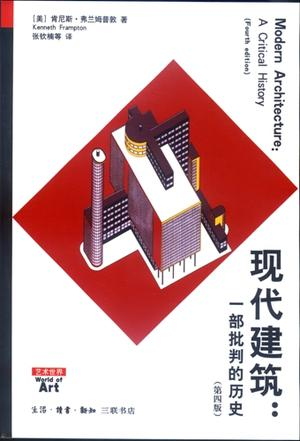作者: 肯尼斯•弗兰姆普敦
副标题: 一部批判的历史
原作名: Modern Architecture
本书是对世界现代建筑的一次全面审视，是国际著名建筑师、建筑史家及评论家肯尼斯•弗兰姆普顿的成名作，1980年问世以来即获极高赞誉，被称为现代建筑发展史的经典之作，多次再版。2004年，三联书店曾出版该书第三版中译本，深受读者欢迎，亦多次重印。在此第四版中，作者在第三版的基础上，以全球化时代为背景增补一章，从地形、形态、可持续性、物质性、人居及公共形式等六个方面分析世界建筑在近三十年来的变化。
本书资料翔实，涵盖了自18世纪中期至20世纪90年代几乎所有主要的建筑思潮及流派、建筑师及代表作；丰富而精致的图片，令本书的阅读更加直观；客观而精到的论述，使现代建筑发展中纷繁复杂的线索变得清晰可循，建筑及建筑艺术中所蕴含的文化内涵和人文关怀贯穿始终，建筑与音乐、绘画、哲学的内在联系也更可感知。
肯尼斯?弗兰姆普敦，1930年生，建筑师、建筑史家及评论家，曾作为一名建筑师在伦敦AA（建筑协会）建筑学院接受培训，现为美国哥伦比亚大学建筑规划研究生院威尔讲席教授。他曾任教于本学科内许多一流的院校，其中包括伦敦皇家艺术学院，苏黎世ETH学院，阿姆斯特丹伯拉杰学院（Berlage Institute），洛桑EPFL及维吉尼亚大学。他写有大量关于现当代建筑的论著，并从1986－1990年担任由密斯?凡?德?罗基金会赞助的位于巴塞罗那的EEC欧洲建筑奖评委会主席。
026 逻辑学——————《简单的逻辑学》
内容简介：作者以其简练而又充满趣味的笔触，将逻辑学活化为一种艺术，从它的基本原理，到论证，到非逻辑思维的根源，再到28种就发生在你身边的非逻辑思维形式，带领我们进入这个精彩无比的逻辑世界。
推荐理由：《简单的逻辑学》就如一场及时雨，一本治愈社会疾病的宝典，的确是应该人手一册。作者在书中告诉我们，生活中，逻辑无处不在。无论我们是有意还是无意，逻辑无时不在服务于我们的生活。——孙路弘 行为学家
http://book.douban.com/subject/24754537/
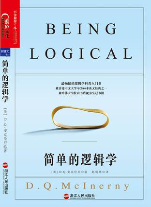作者: D.Q.麦克伦尼
原作名: Being Logical: A Guide to Good Thinking
这是一本足以彻底改变你思维世界的小书。美国著名逻辑学家、哲学教授D.Q.麦克伦尼，将一门宽广、深奥的逻辑科学以贴近生活、通俗易懂、妙趣横生的语言娓娓道来。它既没有刻板的理论教条，也不是正规的教科书，而是一本必不可多得的现实指南。正如著名行为学家孙路弘所说：《简单的逻辑学》就如一场及时雨，一本治愈社会疾病的宝典，的确是应该人手一册。
作者在书中告诉我们，生活中，逻辑无处不在。无论我们是有意还是无意，逻辑无时不在服务于我们的生活。然而逻辑到底是什么，也许并没有太多的人有很清楚的概念。作者以其简练而又充满趣味的笔触，将逻辑学活化为一种艺术，从它的基本原理，到论证，到非逻辑思维的根源，再到28种就发生在你身边的非逻辑思维形式，带领我们进入这个精彩无比的逻辑世界，体会妙趣横生的思维交锋，跨过无处不在的逻辑陷阱，让你沉醉其中，欲罢不能。
027 艺术——————《艺术的故事》
内容简介：《艺术的故事》概括地叙述了从最早的洞窟绘画到当今的实验艺术的发展历程，以阐明艺术史是“各种传统不断迂回、不断改变的历史，每一件作品在这历史中都既回顾过去又导向未来。
推荐理由：在那项帮助人们熟悉艺术的伟大事业中，《艺术的故事》是一部巅峰之作。此书值得一读再读。就像美酒佳酿那样，愈加品赏，愈觉其味隽永。 ——卡特·布朗 美国国立艺术馆馆长
http://book.douban.com/subject/3162991/

作者: [英] 贡布里希 (Sir E.H.Gombrich)
原作名: The Story of Art
《艺术的故事》概括地叙述了从最早的洞窟绘画到当今的实验艺术的发展历程，以阐明艺术史是“各种传统不断迂回、不断改变的历史，每一件作品在这历史中都既回顾过去又导向未来。
恩斯特·贡布里希爵士（Sir. Ernst Gombrich）（1909——2001）生于维也纳，并在维也纳大学攻读美术史。1936年移居英国，进入伦敦大学瓦尔堡大学。曾任牛津大学斯莱德美术讲座教授，哈佛、康奈尔等多所大学的客座教授，并于1972年被英王授封勋爵。主要学术著作有《艺术的故事》《秩序感》《象征的图像》等。贡布里希善于以简明晓畅的语言来表达严肃的题目，以便初入门者能轻松学习。
028 法学——————《法律之门》
内容简介：《法律之门》是美国各大学法学院比较通用的一本法律教科书。也可以看作是一部英美法的微型百科全书。
推荐理由：《法律之门》模拟了美国法律过程的实际运作，打开了进入法律和社会的大门。
http://book.douban.com/subject/2005481/
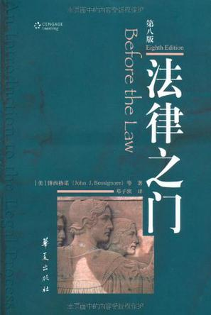作者: [美] 博西格诺
原作名: Before the Law
《法律之门》(第8版)是美国各大学法学院比较通用的一本法律教科书。也可以看作是一部英美法的微型百科全书。《法律之门》(第8版)旨在展示美国的法律过程，不只通过描述，而且通过让读者置身于你来我往的争辩之中，而强调法律讲论的重要意义，则只在部分意义上是规则的一种功能。《法律之门》(第8版)的资料安排意在让每一观点都能与其他观点相比对。每一文章和案例都提供了探索人的紧张关系的机会。正是以这种教学法，《法律之门》(第8版)模拟了美国法律过程的实际运作，打开了进入法律和社会的大门。《法律之门》(第8版)所提供的法律规则、原则和案例，都是社会科学、历史和文学等知识语境中的论辩和讨论素材。
029 语言学——————《语言本能》
内容简介：史蒂芬·平克以他深厚的语言学、认知神经学和进化心理学功底，成功地证明了这样一个事实：语言能力是人类的本能。他的论证条理清晰，生动有趣又不失专业性，他的结论为人们探索人性打下了坚实基础。
推荐理由：这是一本令人放不下手的好书，充满了实验的结果、科学的观察、卓越的洞察力和强有力的说服力。读者同时也会感受到平克教授的幽默。——《科学的美国人》
http://book.douban.com/subject/26380736/
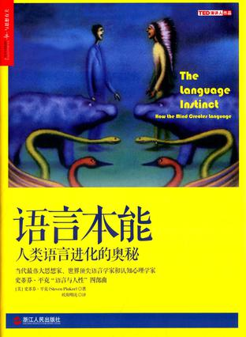作者: [美]史蒂芬·平克
副标题: 人类语言进化的奥秘
原作名: The Language Instinct：How the Mind Creates Language
一扇了解语言器官、破解语法基因、进入人类心智的大门；
一个关于语言问题最权威的答案；
一些令人信服、生动有趣的例证；
一场常识对谬论的彻底胜利。
史蒂芬·平克，出生于加拿大蒙特利尔，1976年取得麦吉尔大学心理学学士学位，1979年取得哈佛大学实验心理学博士学位。
1982年—2003年，在麻省理工学院脑与认知科学系任教，并专心研究儿童的语言学习模式，并最终成为麻省理工学院认知神经学中心的掌门人。1994年，他的《语言本能》一经出版，就成为轰动一时的畅销书，并入选《美国科学家》（American Scientist）评出的20世纪100本最佳科学书籍。
2003年，被聘为哈佛大学心理学教授。2008年—2013年，被授予哈佛学院荣誉教授头衔。
2004年，当选《时代》杂志全球100位最有影响力人物。2010年—2011年，两度被《外交政策》杂志评为全球顶尖思想家。在2013年《前景》杂志“最伟大思想家”的评选中，平克名列第3。
030 军事——————《第三帝国的兴亡》
内容简介：一部反映纳粹德国历史的巨著。它精彩绝伦地记述了被希特勒称为“千秋帝国”（即第三帝国）从兴起到覆灭的全部过程。
推荐理由：大量引用了许多国内不常见的关于纳粹早期、战前政策方针方面的原始资料。是喜欢研究二战和第三帝国的人的必读书。
http://book.douban.com/subject/10435653/
作者: 威廉·夏伊勒
《第三帝国的兴亡(套装上下册)》是全世界最畅销的反映纳粹德国历史的巨著。它精彩绝伦地记述了被希特勒称为“千秋帝国”（即第三帝国）从兴起到覆灭的全部过程。在短短的12年零4个月中，不可一世的第三帝国在人类历史上制造了惨绝人寰的灾难，留下了一段惊心动魄的历史。随着崩溃的迅速到来，人们缴获了大量秘密文件，私人日记、发言记录以及纳粹党领导人的电话录音！于是，一个极端独裁政权的全部秘密和罪恶活动就在它覆灭的同时全部公之于世了。这就是《第三帝国的兴亡(套装上下册)》大量的、真实的资料来源。
作者威廉•夏伊勒（WilliamL.Shirer）是美国著名的驻外特派记者、新闻分析员与世界现代史学家。他在二战期间担任哥伦比亚广播公司的战地记者，报道了大量有关纳粹德国从柏林兴起到灭亡的整个经过。该书最初于1959年出版，刚一面世就立即轰动了整个世界。英国著名历史学家特雷弗•罗珀在《纽约时报》上称赞他是将“活着的证人能够与史实结为一体”的非凡杰出的历史学家。《第三帝国的兴亡(套装上下册)》以大量无可辩驳的事实成为迄今论述纳粹德国最具权威的作品。
《第三帝国的兴亡(套装上下册)》译者权威。由董乐山等九位“大家”亲自执笔翻译，阵容空前。自引进至今，《第三帝国的兴亡(套装上下册)》已成为中国读者阅读希特勒和他的纳粹德国最为畅销的经典作品。
威廉·夏伊勒(William L．shirer),生于美国芝加哥，是著名的驻外特派记者、新闻分析员与世界现代史学家。他为哥伦比亚广播公司担任战地记者期间，报道了许多有关纳粹德国从柏林兴起到灭亡的经过。本书最初于1 959年出版．刚一面世就立即轰动了整个世界。英国著名历史学家特雷弗·罗珀在《纽约时报》上称赞他是将“活着的证人能够与史实结为一体”的非凡杰出的历史学家。他还著有《柏林日记》(1941年)、《第三共和国的崩溃》(1969年)和关于欧洲政治，斯堪的纳维亚的书，及三本小说。
本书以其大量的、真实的资料成为论述纳粹德国最具权威的作品，是希特勒纳粹德国令人颤栗的故事最杰出的研究成果。